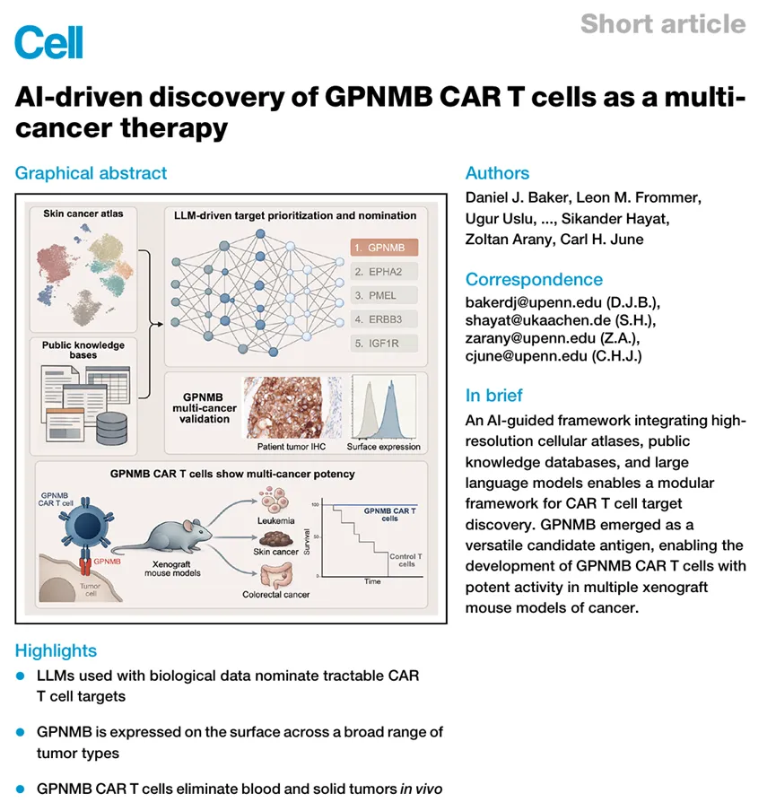
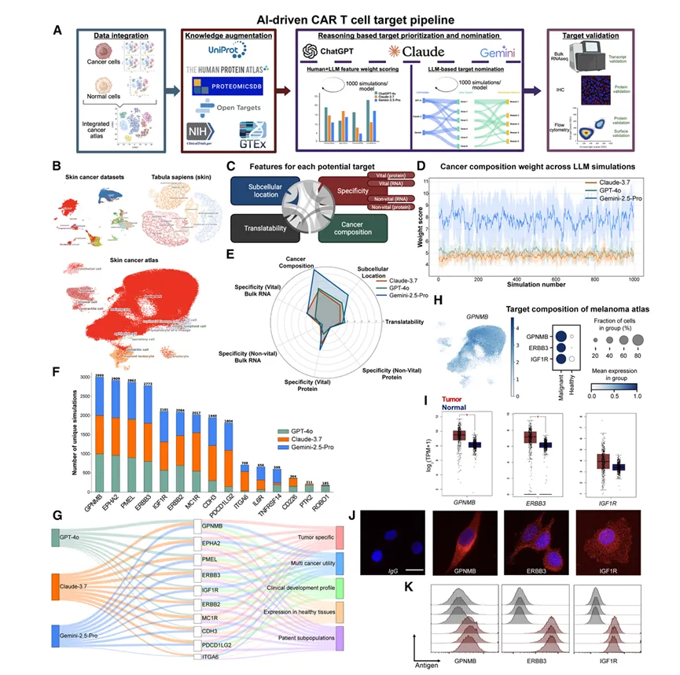
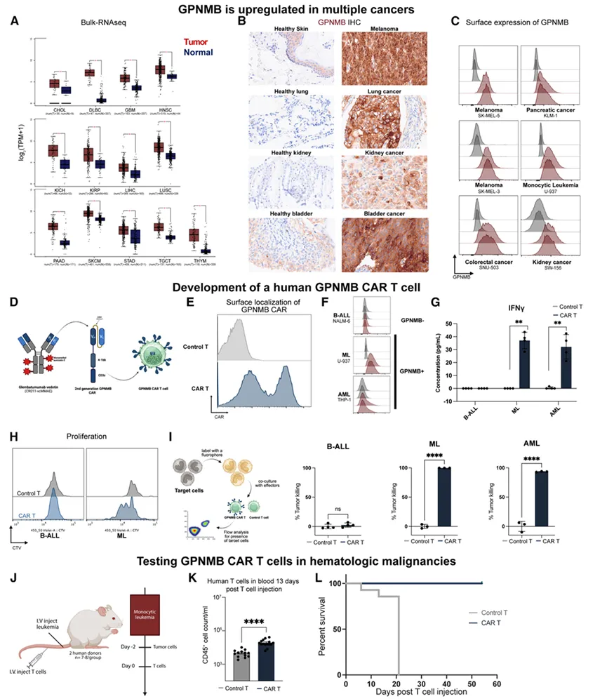
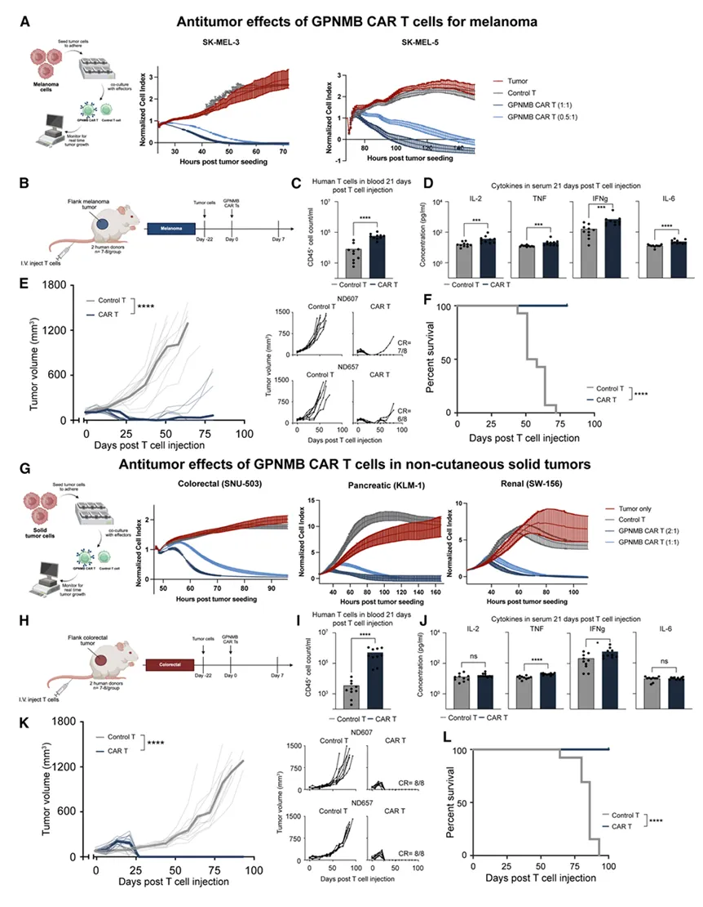

最新《Cell》：你还在用大模型改代码的时候，我已经在用AI设计CAR-T了
原文：https://mp.weixin.qq.com/s?__biz=MzAwMzIzOTk5OQ==&mid=2247539064&idx=1&sn=ed29b1d7c2d913fec02a321a7c322365&chksm=9b3c2028ac4ba93e6cd5313d3ab0a25da8bf4f0b140c07468f53f94e707278211019f1d90049#rd 合集：文献速递
一、写在前面
本次分享的是发布于《Cell》（IF=45.1）的文章，感兴趣的同学可以看看原文："AI-driven discovery of GPNMB CAR T cells as a multi-cancer therapy"
DOI：10.1016/j.cell.2026.06.002

CAR-T细胞疗法通过对T细胞进行基因工程改造，使其能够特异性识别并杀伤肿瘤细胞，已在血液系统恶性肿瘤的治疗中取得了突破性进展，部分患者甚至实现了临床治愈。然而，CAR-T疗法向实体瘤及非恶性疾病的拓展仍面临严峻挑战，其中最核心的制约因素在于安全靶点抗原的严重匮乏 。理想的CAR-T靶点需同时满足在肿瘤细胞表面高度富集、在正常组织中低表达或不表达等条件，以避免on-target/off-tumor毒性的发生。此外，CAR-T细胞产品的高度个体化和制备流程的复杂性，也极大地限制了其在临床转化中的可及性。因此，开发一种能够跨多种适应症通用的CAR-T产品，具有极为重要的临床价值。
传统的肿瘤靶点发现流程依赖于对疾病特异性数据库的人工构建与分析，需逐步筛选在病变细胞中富集表达、定位于细胞表面、且在正常组织中具有良好耐受性的候选抗原 ，这一过程耗时耗力、成功率不稳定。近年来，人工智能技术——尤其是大语言模型（LLM）——的快速发展为生物医学研究开辟了新路径。大语言模型能够跨模态整合、推理和优先排序海量复杂的生物学数据**。基于此，研究者提出将LLM推理能力与高分辨率单细胞图谱相结合，构建一个可扩展、系统化的CAR-T细胞靶点提名框架。通过整合多个皮肤癌单细胞数据集与健康人参考数据集，并利用三种大语言模型进行综合评估，该AI驱动的计算流程最终将糖蛋白非转移性黑色素瘤蛋白B（GPNMB）确定为最优候选靶点，并在白血病、黑色素瘤及结直肠癌的人源化模型中验证了GPNMB CAR-T细胞的强效抗肿瘤活性。**
如果需要单细胞数据分析教学、生信热点全文复现、自测数据个性化分析辅导、实验科研服务和常态化实验学习，欢迎联系后台。
二、主要内容
一：构建皮肤癌与健康组织 单细胞图谱以识别CAR-T细胞靶点
识别最优CAR-T细胞靶点需要在多个关键特征之间取得平衡 ，包括肿瘤表达水平、在健康组织中的缺失情况、细胞表面定位以及临床可转化性。因此作者开发了一种三管齐下的策略——整合多项研究数据、利用公共资源扩充知识库、并应用大语言模型（LLM）系统性地提名CAR-T细胞开发候选靶点（Fig.1A）。
鉴于难治性皮肤癌 的严重危害及免疫疗法在该疾病中的显著价值，作者聚焦于皮肤癌CAR-T细胞靶点的鉴定。CAR-T疗法的已知并发症包括肿瘤抗原异质性和on-target/off-tumor毒性， 因此他们在单细胞分辨率下评估了抗原异质性。通过整合四个公开可用的皮肤癌患者单细胞RNA测序（scRNA-seq）数据集构建了一个图谱，涵盖了多种疾病分期和亚型，包括基底细胞癌、鳞状细胞癌以及不同分期的黑色素瘤（含转移灶）（Fig.1B）。完成数据集整合后，作者从公开资源中为图谱中的每个潜在靶点提取了额外特征，涉及的数据库包括UniProt、人类蛋白质图谱（Human Protein Atlas）、成人基因型-组织表达数据库（GTEx）、Open Targets、clinicaltrials.gov以及ProteomicsDB（ Fig.1C）。这些特征大体上涵盖了CAR-T细胞开发的四个关键维度：亚细胞定位、肿瘤特异性、癌症组成以及临床可转化性。
之后作者查询了三个独立的大语言模型，ChatGPT-4o、Claude-3.7以及Gemini-2.5-Pro，通过1,000次独立模拟来优化每个靶点特征的权重（Fig.1D）。在此基础上，作者建立了一套稳健的综合评分体系，用于对理想CAR-T细胞靶点的多维度特征进行优先排序（Fig.1E-F）。每个模型的任务是从这100个基因候选列表中选出10个基因用于CAR-T细胞开发，并基于五个不同维度提供明确的提名理由：肿瘤特异性、多癌种适用性、临床开发潜力、重要组织低表达以及对特定患者亚群的相关性（Fig.1G）。其中GPNMB作为被提名频率最高的靶点，因肿瘤特异性被持续选中，同时也在多癌种适用性方面表现出强烈信号。 并且作者提名的靶点在scRNA-seq图谱的恶性细胞群体中始终表现出显著富集（Fig.1H）。
为评估作者AI驱动的CAR-T细胞靶点优先排序框架的生物学相关性，他们采用了多种正交验证方法，包括bulk转录组 数据分析、免疫荧光显微镜检测以及流式细胞术的细胞表面蛋白确认（Fig.1J）。 鉴于CAR-T细胞疗法需要靶点在细胞表面表达才能实现有效靶向，作者进一步采用非通透化流式细胞术验证了这些抗原的表面呈递情况（Fig.1K）。

Figure 1.
二：GPNMB是多种癌症中的可成药靶点
GPNMB是一种I型跨膜糖蛋白，参与细胞黏附、迁移、组织修复及免疫抑制等多种生物学过程。之后作者评估了GPNMB在多种癌症类型中的表达情况。来自TCGA的bulk RNA-seq数据显示，GPNMB不仅在黑色素瘤中高表达，在多种其他恶性肿瘤中同样呈现高表达（Fig.2A）。为在蛋白水平验证GPNMB的存在，作者对患者肿瘤活检样本进行了免疫组织化学（IHC）染色。与转录组数据一致，GPNMB蛋白在黑色素瘤及多种其他癌症的肿瘤组织中均有表达（ Fig.2B-C）。
为靶向GPNMB表达的肿瘤，作者利用glembatumumab vedotin的抗原结合域构建了第二代CAR， 将该抗体的轻链和重链整合入第二代CAR构建体中，该构建体包含CD8α铰链区和跨膜域、4-1BB共刺激域以及CD3ζ信号域（Fig.2D）。经编码该CAR的慢病毒载体转导的原代人T细胞成功实现了CAR的细胞表面表达（Fig.2E）。为检验GPNMB CAR-T细胞的特异性和效力，作者分别评估其活化能力、效应功能及杀伤活性 。GPNMB CAR-T细胞表现出抗原特异性活化——仅在与GPNMB阳性恶性肿瘤细胞共培养时才发生增殖，相应地，这些CAR-T细胞也仅在与GPNMB阳性肿瘤细胞共培养时才显示出显著升高的细胞因子分泌（Fig.2F-H）。最重要的是，GPNMB CAR-T细胞对ML和AML表现出强效抗肿瘤活性，同时对抗原阴性的恶性肿瘤细胞无明显杀伤力（Fig.2I）。综合上述结果，这些发现证明了一种具有特异性和效力的功能性人源GPNMB靶向CAR的成功开发。
为评估GPNMB CAR-T细胞在血液系统恶性肿瘤中的体内疗效，作者建立了人源ML异种移植模型。 将肿瘤细胞经静脉注射至免疫缺陷小鼠体内，2天后将小鼠随机分组，分别输注对照T细胞或GPNMB CAR-T细胞（Fig.2J）。为评估CAR-T细胞在体内的抗原依赖性扩增情况，在T细胞输注后第13天检测小鼠外周血。流式细胞术结果显示 ，接受GPNMB CAR-T细胞治疗的小鼠外周血中人源CD45阳性细胞显著扩增，与靶点结合的发生相一致（Fig.2K）。虽然通过外周血监测肿瘤负荷，但未在外周血中检测到肿瘤负担，这可能是由于肿瘤主要在骨髓中定植和增殖所致。然而，接受对照T细胞的小鼠出现了快速的疾病进展，在移植后数周内即达到人道终点。与之形成鲜明对比的是，接受GPNMB CAR-T细胞治疗的小鼠存活数月且无任何疾病迹象（Fig.2L）。

Figure 2.
三：GPNMB CAR-T在黑色素瘤中能发挥作用
搞定血液瘤之后，作者们开始向实体瘤 发起挑战。首先是黑色素瘤——体外实验 里，GPNMB CAR-T对黑色素瘤细胞的杀伤呈明显的剂量依赖性，效果还不错（Fig.3A）。体内实验用的是经典的皮下异种移植模型 ，肿瘤种下去22天后再输注CAR-T细胞。结果显示注后21天，治疗组小鼠外周血里人源T细胞大量扩增，血清细胞因子水平也显著升高（Fig.3C-D）。更重要的是，GPNMB CAR-T组的肿瘤体积出现了大幅缩小，大多数小鼠实现了完全缓解 ，总体生存期也显著延长（Fig.3E-F）。鉴于GPNMB在各种实体瘤里表达都挺广泛，作者们顺势测了更多癌种。体外实验显示，GPNMB CAR-T对结直肠癌、胰腺癌、肾癌来源的细胞系均有明显的杀伤活性（Fig.3G）。之后，进行结直肠癌的体内实验，结果显示所有接受GPNMB CAR-T治疗的小鼠全部完全缓解，没有一例复发 ，生存期也全面碾压对照组（Fig.3K-L）。综合所有数据来看，GPNMB CAR-T细胞不仅能在结直肠癌中实现持久应答，更有潜力对多种实体瘤产生广泛的治疗效果——这个靶点的"通用性"还是相当令人期待的！

Figure 3.
三、总结与展望
总结
这篇文章最大的亮点在于将AI技术系统性地引入了CAR-T细胞靶点发现流程。传统的靶点筛选高度依赖人工经验和逐步数据库查询，耗时耗力且成功率参差不齐。而该研究通过整合皮肤癌单细胞图谱与多个公共数据库，提取涵盖肿瘤特异性、细胞表面定位、重要组织安全性及临床可转化性四个维度的特征，再借助ChatGPT-4o、Claude-3.7和Gemini-2.5-Pro三个大语言模型进行1000次独立模拟评估，最终建立了一套稳健的综合评分体系 。这种"人在回路"的AI驱动框架不仅提高了靶点筛选的系统性和可重复性，也为未来其他癌种的CAR-T靶点发现提供了可直接借鉴的通用范式。
在实验验证层面，GPNMB作为AI框架提名的首位候选靶点，展现出了令人印象深刻的跨癌种治疗潜力。无论是血液系统恶性肿瘤（单核细胞白血病、急性髓系白血病），还是实体瘤（黑色素瘤、结直肠癌），GPNMB CAR-T细胞均表现出强效且特异的抗肿瘤活性，多个模型中实现了完全缓解。尤其值得关注的是，GPNMB在正常组织中表达极低，这在一定程度上降低了on-target/off-tumor毒性的风险。当然，不同肿瘤模型间CAR-T细胞扩增能力和疗效持久性的差异也提示我们，肿瘤微环境对CAR-T疗法的影响仍需深入探索，未来临床转化中如何优化给药方案、克服实体瘤免疫抑制微环境将是关键挑战。

如何联系我们

 留一个领取资料、开箱即用的单细胞分析镜像的微信号[Biomamba_zhushou]，方便各位随时交流。同时我们也构建了交流群矩阵，欢迎大家入群讨论。
大家可以阅读完这几篇之后添加给生信入门初学者的小贴士没有检索，就没有发言权
留一个领取资料、开箱即用的单细胞分析镜像的微信号[Biomamba_zhushou]，方便各位随时交流。同时我们也构建了交流群矩阵，欢迎大家入群讨论。
大家可以阅读完这几篇之后添加给生信入门初学者的小贴士没有检索，就没有发言权
已有生信基地联系方式的同学无需重复添加

 您点的每个赞和在看，我都认真当成了喜欢
您点的每个赞和在看，我都认真当成了喜欢